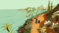
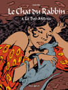
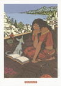
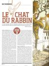
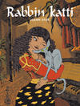
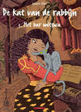

Actualités
Sortie du film le chat du rabbin repoussée
Le film le chat du rabbin dont la sortie était initialement prévue au 16 juin est désormais repoussé au 3 novembre 2010.
Nouvelles images du film le chat du rabbin
De nouvelles images du film le chat du rabbin ont été publiées sur le site Autochenille Production.
Le Chat du Rabbin dans votre Télérama
Une nouvelle édition de l'album La Bar-Mitsva du chat du rabbin sera disponible avec le Télérama du 13 juillet.
D'autres albums de la collection Poisson Pilote et de l'éditeur Dargaud seront disponible avec Télérama tout au long de l'été.
Plus d'informations sur le blog de Poisson Pilote: Poisson Pilote dans votre Télérama cet été !
Édition spéciale de La Bar-Mitsva
Pour ses 10 ans, Poisson Pilote réédite certains de ses albums dont la Bar-Mitsva du Chat du Rabbin.
News sur le blog de Joann Sfar
Joann Sfar donne des news à propos du chat du rabbin sur son blog.
On y apprend que le dessin animé le chat du rabbin est fini. L'écriture du prochain album du chat du rabbin a déjà commencé mais Joann Sfar ne le dessinera qu'après avoir fini ses albums en cours.
Nouvel ex libris
Ajout d'un ex libris réalisé par Dargaud pour l'album le Malke des Lions sur la page Ex Libris.
Journal de bord du chat du rabbin - Épisode 3
Studio Ciné Live publie l'épisode 3 du journal de bord suivant le tournage du film le chat du rabbin.
Éditions finnoises
Les couvertures de "Rabbin Katti" (Le chat du rabbin en finnois) ont été ajoutées à la page les éditions étrangères.
Flux RSS
Le flux RSS des actualités du site le Chat du Rabbin a été ajouté et est disponible à l'adresse http://www.chat-du-rabbin.com/fre/rss/feed/news.
Éditions néerlandaises
Les couvertures de "De Kat van de rabbijn" (Le chat du rabbin en néerlandais) ont été ajoutées à la page les éditions étrangères.
< Actualités précédentes Page 5 sur 6 Actualités suivantes >